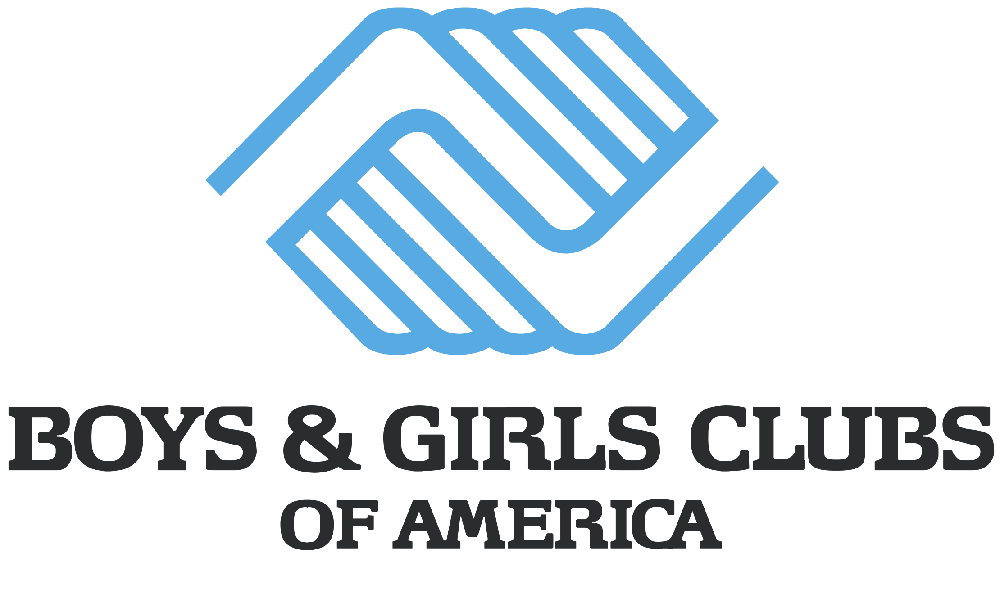

Working at UTA, ULA, and the Boys and Girls Club of Cabarrus County has greatly contributed to my personal and professional growth. Each experience has taught me valuable lessons in teamwork, leadership, and real-world problem-solving. Alongside these roles, working on personal coding projects is crucial. It builds practical skills, fosters creativity, and provides hands-on experience that deepens my understanding of programming concepts, allowing me to explore and overcome challenges that might otherwise go unnoticed in a formal setting.
Boys and Girls Club of Cabarrus County
Communication

Program Assistant / Intern
In these roles, I created and led the BGC Robotics Program, enrolling over 20 youths. I mentored and advised youth scholars while overseeing and facilitating life skills-building activities. Additionally, I led over 760 children to and from various activities and assisted staff in creating a safe and engaging environment for exploration.
COMP 110 UTA
Python
Communication

Undergraduate Teaching Assistant
In this role, I was responsible for a variety of tasks, including attending lectures to administer tests and assist with in-class assignments, holding office hours, managing a ticketing system for office hours, and contributing to and maintaining a team website.
POLI 281 ULA
R
Communication
Undergraduate Learning Assistant
In this role, I was responsible for assisting undergraduates in learning to code in R by supporting in-class activities, as well as scheduling and hosting office hours to provide guidance on assignments and overall clarification of course material.